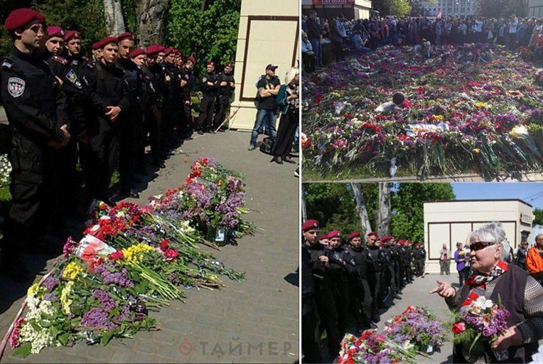
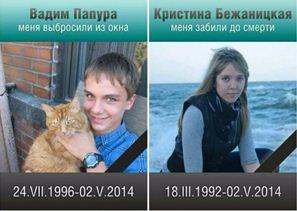
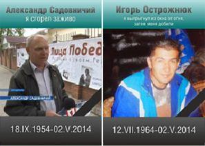
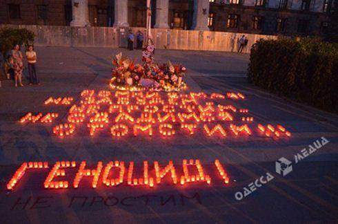

Le 2 mai 2016, Odessa commémorait les deux ans de la tragédie de la Maison des syndicats, où 50 personnes périrent brûlées, gazées, achevées une balle dans la tête, plus de 250 furent blessées et une ville mise à genoux par les milices néo-nazies du nouveau régime pro-européen. Un des responsables de ce massacre, A. Parouby, est aujourd'hui à la tête du Parlement ukrainien. Mais les habitants, malgré menaces et pressions, sont sortis dans la rue au cri de « Nous nous souvenons, nous ne pardonnons pas ».
Les célébrations du début mai mettent les autorités ukrainiennes sur les dents. Des groupes nazis comme Secteur droit, Aïdar ou Azov ont débarqué dans la ville fin avril. Malgré diverses provocations, il n'a pas été possible pour la ville d'annuler la manifestation commémorative du 2 mai. Mais le Gouverneur d'Odessa, Saakachvilli, qui avait demandé l'instauration de l'état d'urgence, a obtenu des forces supplémentaires de la Garde nationale et de ses groupuscules extrémistes légalisés par le pouvoir.
Ainsi, du 30 avril au 10 mai, 3500 policiers et plus de 300 membres du SBU (l'ex-KGB) vont maintenir l'ordre dans la ville. Selon les paroles, ensuite démenties par Saakachvili, du conseiller du ministre de l'intérieur, Zorian Chkiriak, ordre a été donné de tirer à vue au moindre comportement agressif.
Afin de ne pas faire trop de bruit, les journalistes furent triés à la frontière. Par exemple, un journaliste polonais Tomach Matseitchuk s'est vu non seulement déporté, mais interdit de séjour pour 5 ans. Le journaliste et écrivain allemand Saadi Issakov s'est vu refusé l'entrée en Ukraine à la frontière de l'aéroport, sans aucune explication ou justification.
Alors que la manifestation a finalement été autorisée, le matin, la police bloque totalement l'accès à la Maison des syndicats. Le prétexte est simple; une alerte à la bombe. Bien qu’une heure avant le début des célébrations, la police ait annoncé que l'alerte était fausse, elle n'autorise pas l'accès au bâtiment : elle n'aurait obtenu aucune information en ce sens.
De 2000 à 5000 personnes, selon les sources, bravent le régime. Les parents des victimes se voient interdire l'accès au bâtiment qui a servi de tombeau à leurs proches. Les prêtres sont refoulés, ils ne peuvent prier pour la mémoire des victimes.

Mais la tension monte... Un énorme bandeau est tendu avec la photo de Poroshenko disant qu'il couvre les assassins d'Odessa
Et ça ne s'arrête pas là. Les gens commencent à entonner la chanson de la Guerre sacrée. En 1941, dés le début de l'entrée en guerre de l'Union soviétique contre l'Allemagne nazie, est publié le poème de Lebedev-Kumatch, La Guerre sacrée et le compositeur Aleksandrov en écrit la musique. Cette chanson devient en quelque sorte l'hymne de la Guerre Patriotique, le symbole de la défense de la Patrie. Ses premières paroles sont « Lèves-toi, grand pays ».
Des slogans sont également repris par la foule : « Le fascisme ne passera pas » ou « Sortez de la ville, Bandéristes! ».
Evidemment, le pouvoir ne pouvait laisser l'espace uniquement à la contestation. Il faut rappeler qu'il s'agit bien d'une « révolution de la dignité ». Le soir, vers 20h une manifestation pro-maïdan a été organisée par la ville.
Pour notre part, restaurons la Dignité.

Vadim Papoura, on m'a jeté d'une fenêtre (24/07/1996 - 02/05/2014), et Kristina Bejanitskaya, on m'a battu à mort (18/03/1992 - 02/05/2014).

Alexandre Sadovnitchy, j'ai brûlé vivant (18/09/1954 - 02/05/2014), Igor Ostrojniuk, j'ai sauté par la fenêtre pour éviter le feu, ensuite l'on m'a achevé au sol (12/07/1964 - 02/05/2014)
Et encore beaucoup d'autres….
Ils eurent des dates de naissance différente, des vies différentes, des rêves, des proches, des amours, mais tous finirent le même jour. Le 2 mai 2014. A Odessa.
Pour bénir dans le sang l'avènement du nouveau régime démocratique pro-européen.

« Nous nous souvenons, nous n'oublions pas, nous ne nous rendons pas, nous nous vengerons !!! Génocide ! »
Aucun responsable n'a été condamné, aucune enquête n'est menée.
Partager cette page